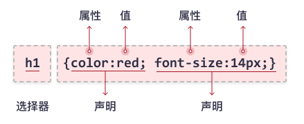

CSS 入门#1
简介
CSS：层叠样式表（Cascading Style Sheets）
CSS 是一种描述 HTML 文档样式的语言，用于设计风格和布局，比如更改内容的字体、颜色、大小、间距，将内容分为多列，或者添加动画及其他的装饰效果。
CSS 语法
CSS 规则集（rule-set）由选择器和声明块组成：

选择器指向您需要设置样式的 HTML 元素。
声明块包含一条或多条声明。
每条声明都包含一个 CSS 属性名称和一个值，以冒号分隔。
多条 CSS 声明用分号分隔，声明块用花括号括起来。
实例：
1 | p { |
在此例中，所有 <p> 元素都将居中对齐，并带有红色文本颜色。
CSS 选择器
CSS 选择器用于“查找”（或选取）要设置样式的 HTML 元素。
基本选择器
通用选择器
通用选择器（*）选择页面上的所有的 HTML 元素。
语法：*
实例：
1 | * {text-align: center;} |
元素选择器
最常见的 CSS 选择器是元素选择器。元素选择器根据元素的名称来选择 HTML 元素。
语法：elementname
实例：
1 | h1 {color:blue;} |
id 选择器
id 选择器使用 HTML 元素的 id 属性来选择特定元素。
语法：#idname
实例：
1 | #intro {font-weight:bold;} |
类选择器
类选择器选择有特定 class 属性的 HTML 元素。
语法：.classname
实例：
1 | .important {color:red;} |
类选择器可以结合元素选择器来使用：
1 | p.important {color:red;} |
分组选择器
选择器列表
通过 , 可将不同的选择器组合在一起。
语法：A, B
实例：
1 | h1, h2, p { |
CSS 颜色
颜色名和颜色值
在 CSS 中，可以使用颜色名称来指定颜色：
tomato
也可以使用 RGB 值、HEX 值、HSL 值、RGBA 值或者 HSLA 值来指定颜色：
rgb(255, 99, 71)
#ff6347
hsl(9, 100%, 64%)
rgba(255, 99, 71, 0.5)
hsla(9, 100%, 64%, 0.5)
文本颜色
hsl(9, 100%, 64%)
rgba(255, 99, 71, 0.5)
hsla(9, 100%, 64%, 0.5)
文本颜色
hsla(9, 100%, 64%, 0.5)
文本颜色
设置文本的颜色：
1 | h1 { |
背景色
设置背景色：
1 | h1 { |
边框颜色
设置边框的颜色：
1 | h1 { |
CSS 文本
文本颜色
color 属性用于设置文本的颜色。
文本对齐
text-align 属性用于设置文本的水平对齐方式。
实例：
1 | p { |
👉居中对齐👈
1 | body { |
👈左对齐👈
1 | body { |
👉右对齐👉
文本装饰
text-decoration 属性用于设置或删除文本装饰。
实例：
1 | p { |
1 | p { |
上划线
1 | p { |
删除线
1 | p { |
下划线
字体
font-family 属性规定文本的字体。
实例：
1 | p { |
通用字体族
在 CSS 中，有五个通用字体族：
- 衬线字体（Serif）- 笔画结尾有特殊的装饰线或衬线。
- 无衬线字体（Sans-serif）- 笔画结尾是平滑的。
- 等宽字体（Monospace）- 字体中每个字宽度相同。
- 草书字体（Cursive）- 模仿了人类的笔迹。
- 幻想字体（Fantasy）- 具有特殊艺术效果的字体。
字体例子
| 通用字体族 | 字体名称实例 |
|---|---|
| Serif | Times New Roman Georgia |
| Sans-serif | Arial Verdana |
| Monospace | Courier New Lucida Console |
| Cursive | Brush Script MT Lucida Handwriting |
| Fantasy | Harrington Papyrus |
字体大小
font-size 属性设置文本的大小。
实例：
1 | h1 { |
CSS 背景
背景色
background-color 属性指定元素的背景色。
背景图片
background-image 属性指定用作元素背景的图像。
实例：
1 | body { |
背景尺寸
background-size 属性指定背景图像的尺寸。
实例：
1 | body { |
关键字：
cover- 缩放背景图片以完全覆盖背景区，可能背景图片部分看不见。contain- 缩放背景图片以完全装入背景区，可能背景区部分空白。
1 | body { |
第一个值指定图片的宽度，第二个值指定图片的高度。
如果仅有一个数值被给定，这个数值将作为宽度值大小，高度值将被设定为 auto。
1 | body { |
可以混合使用百分比值和长度值。
背景重复
background-repeat 属性指定背景图像的重复方式。
默认情况下，背景图片在水平和垂直方向上都重复。
实例：
1 | body { |
1 | body { |
1 | body { |
背景位置
background-position 属性用于指定背景图像的位置。
实例：
1 | body { |
关键字：
topbottomleftrightcenter
如果仅指定一个关键字，其他值将会是 center。例如 background-position: top; 将会把背景置于上方中央。
1 | body { |
第一个值是水平位置，第二个值是垂直位置。
左上角是0％0％，右下角是100％100％。
如果仅指定了一个值，其他值将是50％。
1 | body { |
可以混合使用百分比值和长度值。
背景附着
background-attachment 设置背景图像是否固定或者随着页面的其余部分滚动。
实例：
1 | p { |
背景图片位置固定，不会随着页面的滚动而滚动。
1 | p { |
背景图片相对于元素本身是固定的，元素本身滚动时，背景一同滚动。但在元素内容滚动时，背景保持静止。
1 | p { |
背景图片会随着元素本身和元素内容的滚动而滚动。
CSS 边框
边框样式
border-style 属性指定要显示的边框类型。
实例：
1 | p { |
可设置以下值：
dotted- 定义点线边框dashed- 定义虚线边框solid- 定义实线边框double- 定义双边框groove- 定义 3D 坡口边框ridge- 定义 3D 脊线边框inset- 定义 3D inset 边框outset- 定义 3D outset 边框none- 定义无边框hidden- 定义隐藏边框
可设置一到四个值（用于上边框、右边框、下边框和左边框）。
边框宽度
border-width 属性指定边框的宽度。
实例：
1 | p { |
5px border-width
1 | p { |
thick border-width
边框颜色
border-color 属性用于设置边框的颜色。
圆角边框
border-radius 属性用于向元素添加圆角边框。
实例：
1 | p { |
 wechat
wechat alipay
alipay